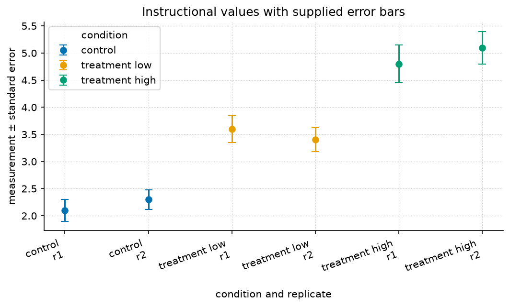

17 Case Studies

manuscript/assets/data/sample_dataset.csv.Level 2/3 · 30 min read · 45 min lecture · Prerequisites: First Principles
This chapter is a worked reference in a different style from sec. 8: where that chapter derives a model, this one applies one to a small dataset. The book uses both styles to connect model assumptions with computations.
17.1 Learning Objectives
By the end of this chapter you should be able to:
- Frame a real question as a comparison between a system under control and treatment conditions.
- Summarise grouped observable data with means and a measure of spread, and read an error-bar figure.
- Fit a simple dose–response trend with
textbook.models.linear_fitand state what its slope and \(R^2\) mean. - Distinguish a defensible interpolation from an unjustified extrapolation.
17.1.1 Study Blueprint
- Big idea: A case study turns a general model into a decision about a specific dataset — and into an honest statement of its limits.
- Core concepts: observable, gradient, threshold.
- Quantitative lens: a linear dose–response fit, eq. 12.
- Data skill: group, average, and fit; then sanity-check the fit against the raw numbers in tbl. 11.
- Common misconception to repair: a high \(R^2\) on three points is not strong evidence — it is an invitation to collect more.
- Primary lab: sec. 29.
- Question bank: sec. 41.
- Bridge to computation:
textbook.models.linear_fit,descriptive_statistics.
Opening Vignette: From a spreadsheet to a decision.
Consider an instructional scenario with a control condition and two treatment levels, two replicates each. These illustrative numbers are supplied in a spreadsheet; no new empirical pilot is reported. The question is not “are they different?” — they obviously are — but “by how much, how confidently, and what should we predict next?” A case study is the discipline of answering those three questions without overreaching.
17.2 The data
The bundled instructional fixture contains six values across three
conditions, recorded in assets/data/sample_dataset.csv and
reproduced in tbl. 11.
| Condition | Replicate | Measurement | Standard error |
|---|---|---|---|
| control | 1 | 2.10 | 0.20 |
| control | 2 | 2.30 | 0.18 |
| treatment (low) | 1 | 3.60 | 0.25 |
| treatment (low) | 2 | 3.40 | 0.22 |
| treatment (high) | 1 | 4.80 | 0.35 |
| treatment (high) | 2 | 5.10 | 0.30 |
Grouping and averaging — the first move in almost every case study —
gives means of \(2.20\) (control),
\(3.50\) (low), and \(4.95\) (high). Across all six points the
mean is \(3.55\) with a standard
deviation of \(1.13\)
(textbook.models.descriptive_statistics). The error-bar
view is fig. 11. The supplied
row errors are fixture annotations; they are not calculated from these
two replicates. The reported overall spread uses the population
denominator and is not an estimated standard error.
17.3 Fitting a trend
Encode the dose as \(0, 1, 2\) for
control, low, and high, and fit a line with
textbook.models.linear_fit:
import numpy as np
from textbook import models
dose = np.array([0.0, 1.0, 2.0])
response = np.array([2.20, 3.50, 4.95]) # condition means
fit = models.linear_fit(dose, response)
# fit.slope ≈ 1.375, fit.intercept ≈ 2.175, fit.r_squared ≈ 0.999The fitted relationship in eq. 12 is
\[ \widehat{y}(d) = 1.375\,d + 2.175 \qquad{(12)}\]
with \(R^2 = 0.999\). The slope says each dose step adds about \(1.4\) units of response; the intercept, \(2.175\), is close to the measured control mean of \(2.20\), a reassuring internal check.
17.4 Interpolation versus extrapolation
Using eq. 12 to estimate the response at an intermediate dose is reasonable: the model interpolates within the range it was fit on. Using it to predict a much higher dose — say \(d = 3\), giving \(\widehat{y} = 6.3\) — is an extrapolation the data cannot support. An alternative dose–response model could saturate (recall the threshold behaviour of the saturating response in sec. 45); a straight line would overpredict if the system approached a ceiling. The fixture does not establish which mechanism applies.
graph LR
A[Raw measurements] --> B[Group + average]
B --> C[Fit a trend]
C --> D{Within data range?}
D -->|yes| E[Interpolate: defensible]
D -->|no| F[Extrapolate: flag the risk]Warning. A linear fit through three averaged points reports \(R^2 = 0.999\), but that number describes how well the line passes through three dots — not how well it predicts the next experiment. Treat it as a reason to collect more data, not as a conclusion. Box discusses the adequacy of scientific models (Box 1976); reproducible handling of the calculation is a distinct concern addressed by Sandve and colleagues (Sandve et al. 2013).
17.5 Summary
A case study moves from raw observables to a summary, a
fitted trend, and — crucially — an honest boundary around what the trend
can claim. Here, averaging and a linear_fit recovered a
clean dose–response slope of about \(1.4\) units per step with an intercept that
matched the control, but the same fit must not be pushed beyond the
measured range. The reusable move is: summarise, fit, then state the
limits.
17.6 Key Terms
observable, gradient, threshold, model.
17.7 Further Reading
- Box (1976) — reasoning about models as useful approximations, which motivates explicitly stating the limits of this fitted trend.
- Sandve et al. (2013) — reproducible computational research practices; use them to preserve the fixture, code, parameters, and resulting calculation.